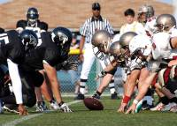

Currencies

The top 5 most tradable currencies
Although the foreign exchange market is often billed as a banker's game, currencies can sometimes be great diversification for a portfolio that might have hit a bit of a rut. It's a market that can also offer tremendous opportunity when other global forums enter the doldrums.ROFL
As a result, knowing a little bit about forex, and the fundamentals behind it, can make significant additions to any trader, investor or portfolio manager's arsenal. Let's take a look at eight currencies every trader or investor should know, along with the central banks of their respective nations.
U.S. Dollar (USD)
The Almighty DollarCreated in 1913 by the Federal Reserve Act, the Federal Reserve System (also called the Fed) is the central banking body of the U.S.. The system is itself headed by a chairman and board of governors, with most of the focus being placed on the branch known as the Federal Open Market Committee (FOMC). The FOMC supervises open market operations as well as monetary policy or interest rates.
The current committee is comprised of five of the 12 current Federal Reserve Bank presidents and seven members of the Federal Reserve Board, with the Federal Reserve Bank of New York always serving on the committee. Even though there are 12 voting members, non-members (including additional Fed Bank presidents) are invited to share their views on the current economic situation when the committee meets every six weeks.
European Euro (EUR)
The Dollar's NemesisHeadquartered in Frankfurt, Germany, the European Central Bank is the central bank of the 17 member countries of the eurozone. In similar fashion to the United States' FOMC, the ECB has a main body responsible for making monetary policy decisions, the Executive Council, which is composed of five members and headed by a president.
The remaining policy heads are chosen with consideration that four of the remaining seats are reserved for the four largest economies in the system, which include Germany, France, Italy and Spain. This is to ensure that the largest economies are always represented in the case of a change in administration. The council meets approximately 10 times a year. (Read more about how central banks control inflation in "What Are Central Banks?")
Japanese Yen (JPY)
Technically Complex, Fundamentally SimpleEstablished as far back as 1882, the Bank of Japan serves as the central bank to the world's second largest economy. It governs monetary policy as well as currency issuance, money market operations and data/economic analysis. The main Monetary Policy Board tends to work toward economic stability, constantly exchanging views with the reigning administration, while simultaneously working toward its own independence and transparency. Meeting 12-14 times a year, the governor leads a team of nine policy members, including two appointed deputy governors.
The Japanese yen (JPY) tends to trade under the identity of a carry trade component. Offering a low interest rate, the currency is pitted against higher-yielding currencies, especially the New Zealand and Australian dollars and the British pound. As a result, the underlying tends to be very erratic, pushing FX traders to take technical perspectives on a longer-term basis. Average daily ranges are in the region of 30-40 pips, with extremes as high as 150 pips. To trade this currency with a little bit of a bite, focus on the crossover of London and U.S. hours (6 AM - 11 AM EST).
British Pound (GBP)
The Queen's CurrencyAs the main governing body in the United Kingdom, the Bank of England serves as the monetary equivalent of the Federal Reserve System. In the same fashion, the governing body establishes a committee headed by the governor of the bank. Made up of nine members, the committee includes four external participants (appointed by the Chancellor of Exchequer), a chief economist, director of market operations, committee chief economist and two deputy governors.
Meeting every month of the year, the Monetary Policy Committee (MPC) decides on interest rates and broader monetary policy, with primary considerations of total price stability in the economy. As such, the MPC also has a benchmark of consumer price inflation set at 2%. If this benchmark is compromised, the governor has the responsibility to notify the Chancellor of Exchequer through a letter, one of which came in 2007 as the U.K. CPI rose sharply to 3.1%. The release of this letter tends to be a harbinger to markets, as it increases the probability of contractionary monetary policy.
Swiss Franc (CHF)
A Banker's CurrencyDifferent from all other major central banks, the Swiss National Bank is viewed as a governing body with private and public ownership. This belief stems from the fact that the Swiss National Bank is technically a corporation under special regulation. As a result, a little over half of the governing body is owned by the sovereign states of Switzerland. It is this arrangement that emphasizes the economic and financial stability policies dictated by the governing board of the SNB. Smaller than most governing bodies, monetary policy decisions are created by three major bank heads who meet on a quarterly basis.
The governing board creates the band (plus or minus 25 basis points) of where the interest rate will reside.
The Euro and Swiss Franc have an interesting relationship. Similar to the euro, the Swiss franc (CHF) hardly makes significant moves in the any of the individual sessions. As a result, look for this particular currency to trade in the average daily range of 35 pips per day. High-frequency volume for this currency is usually pitted for the London session (2 AM - 8 AM EST).
Football Leagues
The new Alliance of American Football is almost ready for kickoff (the two season-openers, San Diego-San Antonio and Atlanta-Orlando, are both on CBS at 8 p.m. ET Saturday, with regional coverage, and can be streamed on CBS All Access). So, what exactly is the AAF? Well, you may have come across some news about former NFL quarterbacks finding new homes, if you've been reading football headlines recently,
CBS Sports Network aired a QB Draft with lead analysis from Kurt Warner, for instance, and in that draft, familiar names like Christian Hackenberg, Josh Johnson (who ended up playing for the Washington Redskins in a few games late in the 2018 NFL season) and Aaron Murray were selected as if starting their NFL careers afresh.
Those quarterbacks -- and countless other players -- are actually preparing to suit up for the AAF, a brand new league set to debut on Saturday.
If you're like most football fans, however, and you're still trying to figure out just what the heck AAF really is, well, you've come to the right place. Here, we've got all the details you need to get ready for the games this weekend (and we've even got Power Rankings):
So what is the AAF? AAF stands for Alliance of American Football, which was announced in March by co-founders Charlie Ebersol and Bill Polian, the latter of whom spent decades working as an NFL executive. It is an eight-team league that exists to both complement the NFL during the offseason and showcase local, developing talent. Its leadership board features former NFL players Jared Allen, Hines Ward and Troy Polamalu, and its mission is to provide "high-quality professional football fueled by a dynamic Alliance between players, fans and the game." And if you want to see out who we've got in the Week 1 games, check out our picks.